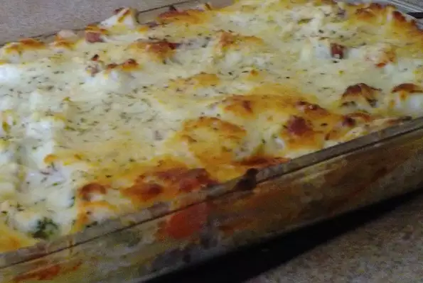

Chicken Taco Lasagna

Do you like tacos? Lasagna? Well put them together and try this tasty dish! Keep reading below to learn how to make Chicken Taco Lasagna
Ingredients
- 4 boneless chicken breasts, cut into 1/4 strips
- 1/2 cup lime juice
- 2 (1 ounce) packets taco seasoning mix
- 1 1/2 cup shredded mozzarella cheese
- 1 cup sour cream
- 1 cup salsa
- salt and ground black pepper to tase
- 1 (8 ounce) package no-boil lasagna noodles
Directions
- Combine chicken, lime juice, and taco seasoning in a large bowl. Stir to make sure chicken is evenly covered.
- Cook chicken mixture over medium heat until firm, about 15 minutes.
- Mix 1/2 cup mozzarella cheese, sour cream, and salsa in a bowl. Season with salt and pepper.
- Put a few spoonfuls of the sour cream mixture in the bottom of a 9x9-inch baking dish. Layer noodles and chicken on top. Cover with remaining 1 cup mozzarella cheese.
- Bake in the preheated oven until noodles are tender and cheese is melted, about 1 hour.
Home